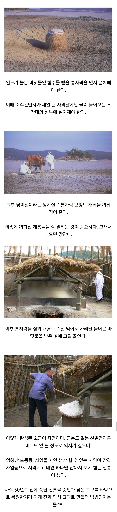

천일염같은 사기가 아닌 진짜 한국 전통 소금 만드는 법
댓글
죽염은 어떰?
정제소금 미만잡
물에 천일염 넣고 끓이면 오만 쓰레기 다 보인다
천일염이 꺼려지는 부분
염전 바닥에 고무 장판 깔아놓음
=> 햇빛으로 증발시키다보면 고무장판도 분해되고 소금에 미세플라스틱이 섞임
농약(제초제,살충제) 사용
염전에 뭔 농약이냐 싶겠지만 염전에서도 자라는 풀이 있고 풀이 그림자를 만들면 소금만드는데 방해됨. => 제초제 뿌림
그리고 염전에 구멍을 뚫어 바닷물이 새어나가게 만드는 '게'를 없애기 위해 살충제 사용
결론은? 울산석유화학단지에서 동해바닷물로 깨끗하게 만드는 한주소금 추천
미세플라스틱, 유해성분, 이상한 쓴 맛 없는 정제소금 좋아요 ㅇㅅㅇ b
다 천일염으로 넘어간 이유가 있는거임